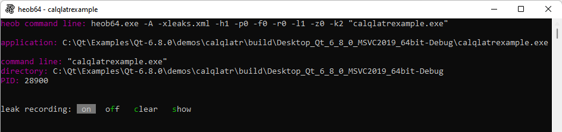
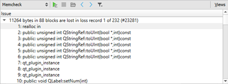

Detect memory leaks with Heob
On Windows, use the Heob heap observer to detect buffer overruns and memory leaks.
To run Heob on the currently open project:
- Select Analyze > Heob.

- Select the Heob settings profile to use, or select New to create a new profile.
- In Heob path, enter the path to the Heob executable.
- Specify settings for running the checks.
- Select OK to run Heob.
Qt Creator runs the application, and then it runs Heob in a terminal.

Heob raises an access violation on buffer overruns and records stack traces of the offending instruction and buffer allocation. You can see the results in the Memcheck view after Heob exits normally.

See also How To: Analyze, Analyzers, Heob, and Analyzing Code.